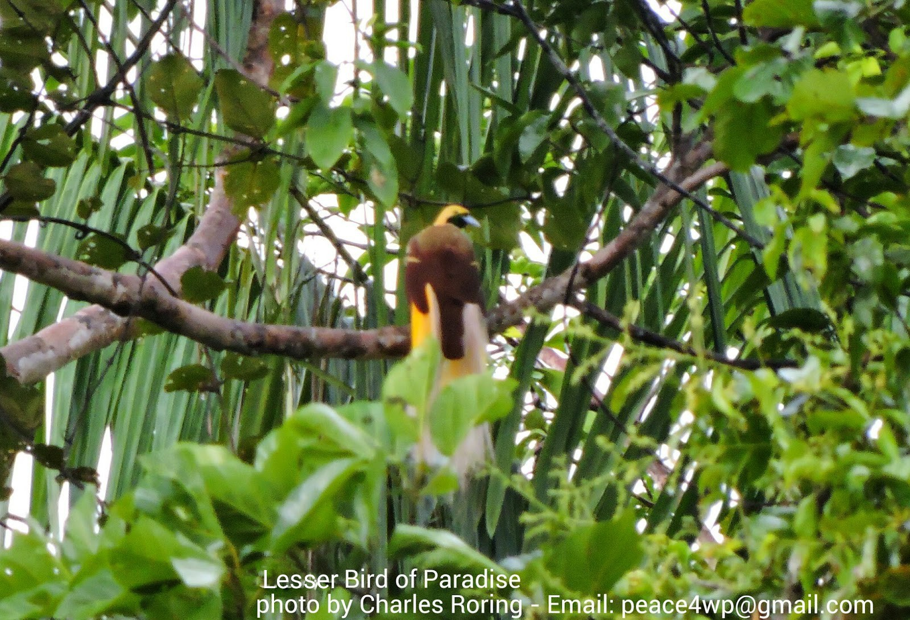
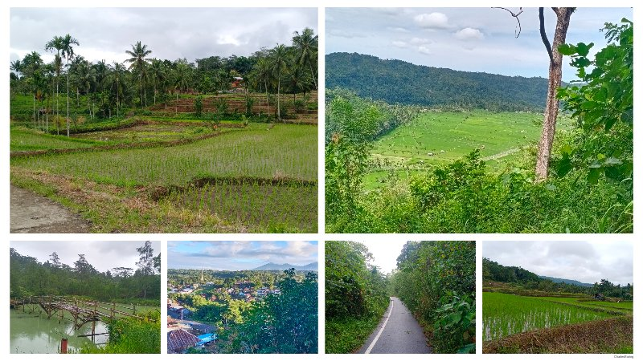

MALAGUFUK
by Charles Roring
I went to the forest of Klasow valley in 2014. There were only 2 tents at that time. Papuan people who lived there had just opened the forest for a new village called Malagufuk. At that time, no body in birding industry knew about its existence. I was with Nico Nauw, Luxen Pa, Kostan Magablo. We tried to introduce birding tourism for the first time to local people who lived there. In the beginning, they did not know what it was. So, they were quite suspicious about it. But they were very kind to receive me and served me in the forest. The youth accompanied me to go birding to Klasow river. There I saw Lesser Birds of Paradise (Paradisaea minor). I took out my Nikon P600 super zoom camera and aimed it at the bird. It was not a sharp photo actually. But I was quite happy with the picture. It was the first photograph of Bird of Paradise from Malagufuk's forest that I published into the internet.
When I returned to my hometown Manokwari, I started writing promotional articles about the village. Around two weeks later, the first tourist visited Malagufuk. He was from Germany. As a I regularly traveled to the village to guide tourists, I saw that basic facilities for serving tourists were not ready. So, I contacted SDSP Foundation in the Netherlands to support this ecotourism project. I requested fund to build water cisterns and their piping installations to the village. Wally Vreede and his wife Coby collected money in the Netherlands and then flew to Sorong city. I met them there. Together, we bought all the construction materials such as 100 sacks of portland cements, water pipes, and faucets, iron rods, and wheel barrows as well as tools and brought them by two big trucks into the Klasow valley. We, together with the villagers, carried all of them on around 3 km walk to Malagufuk. After that we did the construction of clean water facilities for the villagers. I and Darwin from Vacation Indonesia Tour donated some money to buy corrugated metal roof, and nails to help villagers build the guesthouse for tourists.

After several years of promoting Malagufuk in the internet, more visitors became interested in taking birding tour to the village. Now all the villagers support birding tourism. They are also proud of their village because it is now an important birding destination in West Papua. Malagufuk itself is located in the huge Klasow valley that is still covered by tropical rainforest.

The Birds
The type of forest that covers Malagufuk village is lowland rainforest. It is the natural habitat of a lot of plants and animals. The ones that attract the attention of foreign tourists are tropical birds. Some of them include: Lesser Birds of Paradise (Paradisaea minor), King Bird of Paradise (Cicinnurus regius), Magnificent Riflebird (Ptiloris magnificus), Pinon Imperial Pigeon, Western-crowned Pigeon, Pink-spotted Druit Dove, Brown Cuckoo Dove, Orange-breasted Fruit Dove, Sacred Kingfisher, Common Paradise Kingfisher, Orange-breasted Paradise Kingfisher, Northern Cassowary, Variable Goshawk, Grey-headed Goshawk, Brahminy Kite, Shining Flycatcher, Sulphur-crested Cockatoo, Palm Cockatoo, Black Lory, Coconut Lorikeet, Large Fig Parrot, Red-cheeked Parrot, Black-sided Robin, Blyth's Hornbill, Red-bellied Pitta, Hooded Pitta, and a lot more.
About the Birdwatching and Wildlife Watching Tours
I usually spend 4 days/ 3 nights in the forest of Malagufuk village to watch the birds and other wild animals. In the first day, we leave by a 4WD car for Klasow valley. It takes 2 hours to reach the valley. After that, we will continue our trip on foot through the jungle to reach Malagufuk village. The path is often muddy. But the forest is rich of avifauna. There are shining flycatcher calling from the understory of the forest and there are also Sulphur-crested Cockatoo screaming from the twigs of tall trees. Usually we arrive at the village in the afternoon. We will take a rest for a while. Trees around the village are often visited by Pinon Imperial Pigeon, Golden Myna, Rainbow Bee-eater, and Grey-headed Goshawk. Metallic Starlings occupy most of the branches of a big tree near the guesthouse.
For more specific birds such as Twelve-wired Bird of Paradise, Magnificent Riflebird, and Lesser Birds of Paradise, visitors need to walk further into the forest to see them
I have organized a lot of birding and wildlife watching tours to Malagufuk since 2014 because I knew this village first before other birding tour companies know its existence. However, due to its isolated location in deep forest, not all the birdwatchers, especially the elderly people, could reach it.

BIRDWATCHING TOUR IN MINAHASA HIGHLAND
Minahasa is a region in the Province of North Sulawesi that is suitable for birdwatching. To reach that region, visitors need to fly to Manado city. Sonder town is the recommended destination for birdwatching activity.
There are a lot of birding sites in Minahasa. Some of them include Sonder's forest in Tounelet, Hill and Agricultural areas of Sonder, Paddy fields. For sites at the outskirts of Tomohon town, visitors could enjoy walking tour in Mount Mahawu, Pine Forest of Lahendong and Lake Linow. Another site for wildlife watching in the Province of North Sulawesi is Tangkoko Nature Reserve in North Minahasa. There are also Mount Tumpa and Talawaan area at the outskirts of Manado city.
Birds that can be watched in Sonder's forest of Minahasa highland include:
- Chestnut Munia (Lonchura atricapilla)
- Scaly-breasted Munia (Lonchura punctulata)
- Black-faced Munia (Lonchura Molucca)
- Sooty-headed Bulbul (Pycnonotus aurogaster)
- Sulawesi Cuckoo Dove (Macropygia albicapilla)
- Zebra Dove (Geopelia striata)
- Grey-cheeked Green Pigeon (Treron griseicauda)
- Rock Pigeon (Columba livia)
- Black-naped Oriole (Oriolus chinensis)
- Grey-sided Flowerpecker
- Yellow-sided Flowerpecker
- Yellow-billed Malkoha
- Sahul Sunbird
- Brush Cuckoo
- Finch-billed Myna
- Eastern Cattle Egret
- Little Egret
- Hair-crested (White-eyed Drongo)
- Sulawesi Drongo
- Black-crowned White-eye (Zosterops atrifrons)
- Mountain (Warbling) White-eye (Zosterops japonicus)
- Crimson-Sunbird
- Sahul Sunbird
- Brown-throated Sunbird
- Pale Blue Monarch
- Turquoise Flycatcher
- Black-naped Fruit Dove
- White-faced Cuckoo Dove
- White-breasted Woodswallow
- White (Edible)-nest Swiftlet
- Gray-rumped Treeswift
- Barred Rail
- Eastern Yellow Wagtail
- White-browed Crake
- Cinnamon Bittern
- Collared Kingfisher
- Sulawesi Scops Owl (Otus manadensis)
- and a lot more.
Butterfly watching
In addition to birdwatching, visitors who spend their holiday in Sonder town of Minahasa highland could also see various colourful flowers and at the same time watch butterflies. Some interesting species include: The Common Birdwing (Troides helena), Blanchard's Tree Nymph (Idea blanchardii), Blanchard's Wood Nymph (Ideopsis vitrea).

Farmland Tour
Most of the inhabitants of Minahasa highland work as farmers. They grow vanilla, clove, coconut, rice, corn, banana, papaya, durian, spring onion, kangkung, spinach, cabbage, carrot, peanuts, and etc. They also run pig, poultry and fish farms. While walking around the agricultural land of Subdistrict Sonder, visitors can see the crops that local villagers grow and talk with the farmers.
How to get to Sonder?
It is easy to visit Sonder town. First, you need to fly from your country to Manado city which is the capital of the Province of North Sulawesi in Indonesia. There are regular flights between major cities in Indonesia such as Jakarta, Surabaya, Denpasar, Makassar, Sorong and Manado city. Arriving in Manado city, I could meet you at the airport and organize your tour to Sonder town and other areas in Minahasa highland.
Booking
If you are interested in taking a birding tour to places that I mention above and want me to organize your trip and guide you, please, contact me (Charles Roring) by email to: peace4wp@gmail.com or by whatsapp to: +6281332245180.